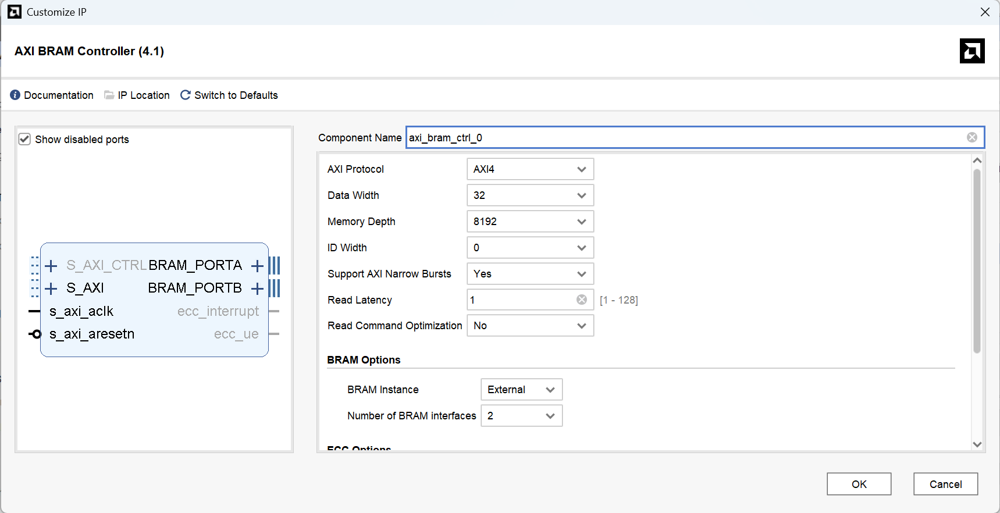

学习AXI总线能够加深对FPGA设计中对数据传输与控制的理解。
AXI：
AXI(Advanced eXtensible Interface)总线：是ARM公司提出的AMBA3.0协议中的重要组成部分，是一种高性能，高带宽，低延迟的片内总线。
- AXI总线已经成为高性能SoC设计、FPGA设计中采用的总线标准。
- AXI总线包括：AXI4、AXI4-Lite和AXI4-Stream
AXI总线读操作

状态转换图
代码实现
读数据模块，主要采用状态机三段式进行实现，大致可以分为以下五个状态：
- 读空闲 (RD_IDLE) ：等待触发突发信号。
- 读地址 (RD_ADDR) ：向从机写入读地址和突发信息。
- 读数据 (RD_DATA) ：数据传递状态。
- 读完成 (RD_LAST) ：传输最后一个数据。
- 读停止 (RD_STOP) ：复位各自信号。
AXI总线写操作
状态转换图
代码实现
写数据模块，主要采用状态机☐三段式进行实现，大致可以分为以下五个状态：
- 写空闲 (WR_IDLE) ：等待触发突发信号。
- 写地址 (WR_ADDR) ：向从机写入写地址和突发信息。
- 写数据 (WR_DATA) ：数据传递状态。
- 写完成 (WR_LAST) ：传输最后一个数据。
- 写停止 (WR_STOP) ：复位各自信号。
设计一个简单的控制逻辑，用于通过AXI-Lite接口对RAM进行读写操作。
添加IP核：AXI BRAM Controller
AXI BRAM Controller：负责将AXI总线协议转换为BRAM接口协议。它支持AXI4或AXI4-Lite接口（可配置）。

添加IP核：Block Memory Generator
Block Memory Generator是AMD（原Xilinx）提供的用于生成FPGA内部块内存（BRAM）的专用IP核。
添加IP核：AXI-Stream FIFO